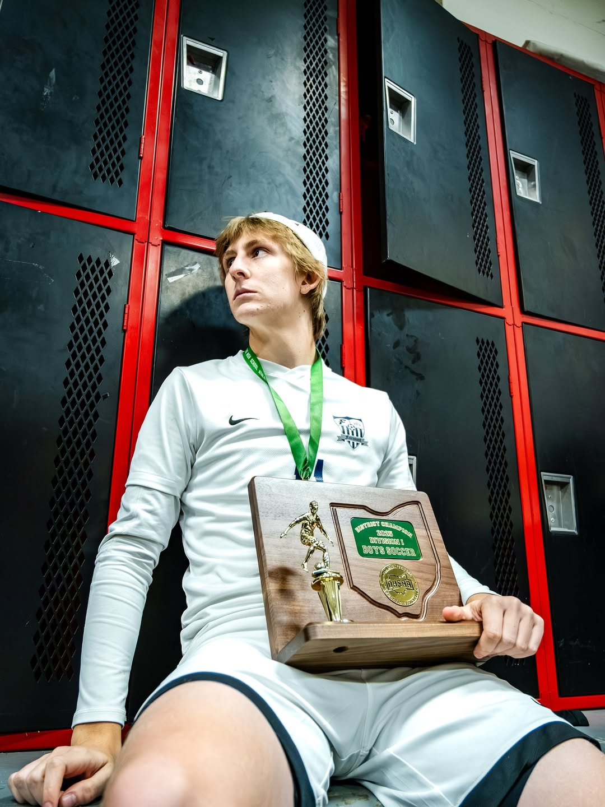

Kettering Fairmont High School and Ohio Galaxies 07/08 Elite | Position: Attacking Midfielder/Winger | Number 11
Soccer has continued to be a vital aspect throughout my life. I have been playing this sport for as long as I can remember. I currently play at Ohio Galaxies 07/08 Elite as a 10 and winger, and just finished my senior year for Fairmont.
